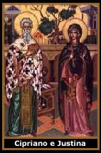
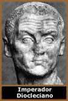

A lenda de São Cipriano -
O Feiticeiro - confunde-se com um outro célebre
Cipriano imortalizado na Igreja Católica, conhecido como
Papa Africano. Apesar do abismo histórico que
os afasta, as lendas combinam-se e os Ciprianos, muitas
vezes, tornam-se um só na cultura popular. É comum
encontrarmos fatos e características pessoais atribuídas
equivocadamente. Além dos mesmos nomes, os mártires
coexistiram, mas em regiões distintas.
Cipriano – O Feiticeiro - é celebrado
no dia 2 de Outubro. Foi um homem que dedicou boa parte de sua
vida ao estudo das ciências ocultas. Após deparar-se
com a jovem (Santa) Justina, converteu-se ao catolicismo. Martirizado
e canonizado, sua popularidade excedeu a fé cristã
devido ao famoso Livro de São Cipriano, um compilado
de rituais de magia.
A fantástica trajetória do Feiticeiro
e Santo da Antioquia, representa o elo entre Deus e o Diabo, entre
o puro e o pecaminoso, entre a soberba e a humildade. São
Cipriano é mais que um personagem da Igreja Católica
ou um livro de magia; é um símbolo da dualidade
da fé humana.
O Feiticeiro
Filho de pais pagãos e muito ricos, nasceu
em 250 d.C. na Antioquia, região situada entre a Síria
e a Arábia, pertencente ao governo da Fenícia. Desde
a infância, Cipriano foi induzido aos estudos da feitiçaria
e das ciências ocultas como a alquimia, astrologia,
adivinhação e as diversas modalidades de magia.
Após muito tempo viajando pelo Egito, Grécia
e outros países aperfeiçoando seus conhecimentos,
aos trinta anos de idade Cipriano chega à Babilônia
a fim de conhecer a cultura ocultista dos Caldeus. Foi nesta época
que encontrou a bruxa Évora, onde teve a oportunidade de
intensificar seus estudos e aprimorar a técnica da premonição.
Évora morreu em avançada idade, mas deixou seus
manuscritos para Cipriano, dos quais foram de grande proveito.
Assim, o feiticeiro dedicou-se arduamente, e logo se tornou conhecido,
respeitado e temido por onde passava.
A Conversão
Cristã
Vivia
em Antioquia a bela e rica donzela Justina. Seu pai Edeso e sua
mãe Cledonia, a educaram nas tradições pagãs.
Porém, ouvindo as pregações do diácono
Prailo, Justina converteu-se ao cristianismo, dedicando sua vida
as orações, consagrando e preservando sua virgindade.
Um jovem rico chamado Aglaide apaixonou-se por
Justina. Os pais da donzela (também convertidos à
fé Cristã) concederam-na por esposa. Porém,
Justina não aceitou casar-se. Aglaide recorreu a Cipriano
para que o feiticeiro aplicasse seu poder, de modo que a donzela
abandonasse a fé e se entregasse ao matrimônio.
Cipriano investiu a tentação demoníaca
sobre Justina. Fez uso de um pó que despertaria a luxúria,
ofereceu sacrifícios e empregou diversas obras malignas.
Mas não obteve resultado, pois Justina defendia-se com
orações e o Sinal da Cruz.
A ineficácia dos feitiços fez com
que Cipriano se desiludisse profundamente perante sua fé
e se voltasse contra o demônio. Influenciado por um amigo
cristão de nome Eusébio, o bruxo converteu-se ao
cristianismo, chegando a queimar seus manuscritos de feitiçaria
e distribuir seus bens entre os pobres.
Os Fantasmas
Em um capítulo de seu livro, Cipriano narra
um episódio ocorrido após sua conversão:
"Numa noite de sexta-feira, caminhava
por uma rua deserta quando se deparou com quatorze fantasmas.
Essas aparições eram bruxas que imploravam ajuda.
Cipriano respondeu-lhes que havia se arrependido de sua vida de
feiticeiro, e que havia se tornado temente a Jesus Cristo. Logo
depois caiu em sono profundo, e sonhou que a oração
do Anjo Custódio o livraria daqueles fantasmas. Ao despertar
teve uma breve visão do Anjo. Assim, auxiliado pela oração
de São Gregório e do Anjo Custódio, esconjurou
e livrou a alma atormentada das bruxas."
A Morte
As notícias da conversão e das obras
cristãs de Cipriano e Justina, chegaram até o imperador
Diocleciano que se encontrava na Nicomédia. Assim, logo
foram perseguidos, presos e torturados. Frente ao imperador, viram-se
forçados a negar a fé cristã. Justina foi
chicoteada, e Cipriano açoitado com pentes de ferro. Não
cederam.
Irritado com a resistência, Diocleciano ainda
lançou Cipriano e Justina numa caldeira fervente de banha
e cera. Os mártires não renunciaram, e tampouco
transpareciam sofrimento. O feiticeiro Athanasio
(que havia sido discípulo de Cipriano) julgou que as torturas
não surtiam efeito devido a algum sortilégio lançado
por seu ex-mestre. Na tentativa de desafiar Cipriano e elevar
a própria moral, Athanasio invocou os demônios e
atirou-se na caldeira. Seu corpo foi dizimado pelo calor em poucos
segundos.
Após este fato, o imperador Diocleciano
finalmente ordenou a morte de Justina e Cipriano. No dia 26 de
Setembro de 304, os mártires e um outro cristão
de nome Teotiso, foram decapitados às margens do Rio Galo
da Nicomédia. Os corpos ficaram expostos por 6 dias, até
que um grupo de cristãos recolheu e os levou para Roma,
ficando sob os cuidados de uma senhora chamada Rufina. Já
no império de Constantino, os restos mortais foram enviados
para a Basílica de São João Latrão.
O Livro
O famoso Livro de São Cipriano foi redigido
antes de sua conversão, mas o mistério que envolve
a vida do Santo interfere também em seu livro. Uma parte
dos manuscritos foi queimada por ele mesmo. A questão é
que não se sabe quando, e por quem os registros foram reunidos
e traduzidos do hebraico para o latim, e posteriormente levados
para diversas partes do mundo.
No decorrer dos anos, o conteúdo sofreu
alterações significativas. Houve uma adaptação
de acordo com as necessidades e possibilidades contemporâneas;
além da adequação necessária na tradução
para os vários idiomas. Esses fatores colocam em dúvida
a fidelidade das versões recentes, se comparadas às
mais antigas.
Atualmente, não é possível
falar do Livro, mas sim dos Livros de São Cipriano.
As edições capa preta e capa de aço; ou aquelas
intituladas como o autêntico, o verdadeiro,
ou o único, enfatizam um mesmo acervo mágico
central, e ainda exaltam o cristianismo e a vitória do
bem sobre o mal. Porém, existem grandes diferenças
no conteúdo. Enquanto alguns exemplares apresentam histórias
e rituais inofensivos, outros apelam para campos negativistas
e destrutivos da magia.
Num aspecto geral, encontra-se instruções
aos religiosos para tratar de uma moléstia, além
de cartomancia, esconjurações e exorcismos. A Oração
da Cabra Preta, Oração do Anjo Custódio
e outras da crença popular também são inclusas
(Magnificat, Cruz de São Bento, Oração
para Assistir aos Enfermos na Hora da Morte, etc.). Além
dos rituais de como obter um pacto com o demônio, como desmanchar
um casamento e da caveira iluminada com velas de sebo.
No Brasil, o Livro de São Cipriano é
usado largamente nas religiões afro-brasileiras, e se tornou
um "almanaque ocultista" de fácil acesso que
se dilui na crendice popular. Há ainda os mitos que o cercam:
muitos consideram ser pecado possuí-lo ou simplesmente
tocá-lo. De qualquer forma, o tema São Cipriano
e tudo que o cerca, é um campo de estudo e pesquisa muito
interessante para os ocultistas, religiosos e aventureiros.
Por
Spectrum